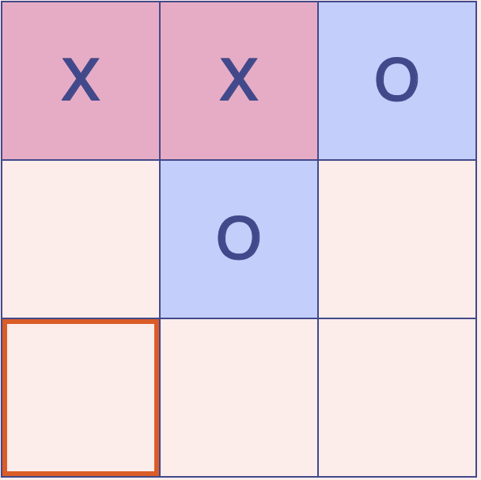

teachable machine
Reflektion
Für dieses Projekts setzten wir uns mit dem Tool "Teachable Machine" auseinander. Durch das Trainieren mit Beispielen, etwa Gesten, Bildern oder Geräuschen, lassen sich Modelle erstellen, die neue Eingaben erkennen und zuordnen können.
Für meine Umsetzung habe ich ein Tic-Tac-Toe-Spiel entwickelt, bei dem die Spieler*innen durch Handzeichen ein Kreuz oder einen Kreis setzen können. Das Training der Handzeichen erfolgte mithilfe der Teachable Machine. Ich habe das System mit unterschiedlichen Positionen der Hand trainiert, sodass es die Bewegungen zuverlässig den Spielsymbolen zuordnen kann. Zusätzlich wollte ich eine Option einbauen, alleine gegen den Computer zu spielen, um die Interaktivität auch ohne zweiten Spieler zu ermöglichen.
Die größte Herausforderung lag darin, die Eingaben stabil und zuverlässig zu erkennen. Unterschiede in Handhaltung, Abstand zur Kamera oder Lichtbedingungen führten zunächst zu ungenauen Erkennungen. Diese Erfahrung hat mir verdeutlicht, wie wichtig Qualität und Vielfalt der Trainingsdaten für maschinelles Lernen sind. Gleichzeitig habe ich durch die Umsetzung ein besseres Verständnis dafür gewonnen, wie ein Modell „lernt“ und wie flexibel es auf unterschiedliche Eingaben reagiert.
Reflexiv betrachtet stand für mich nicht nur die technische Umsetzung im Vordergrund, sondern auch die spielerische und gestalterische Dimension. Es ging darum, eine Anwendung zu entwickeln, die sowohl funktional als auch intuitiv bedienbar ist.